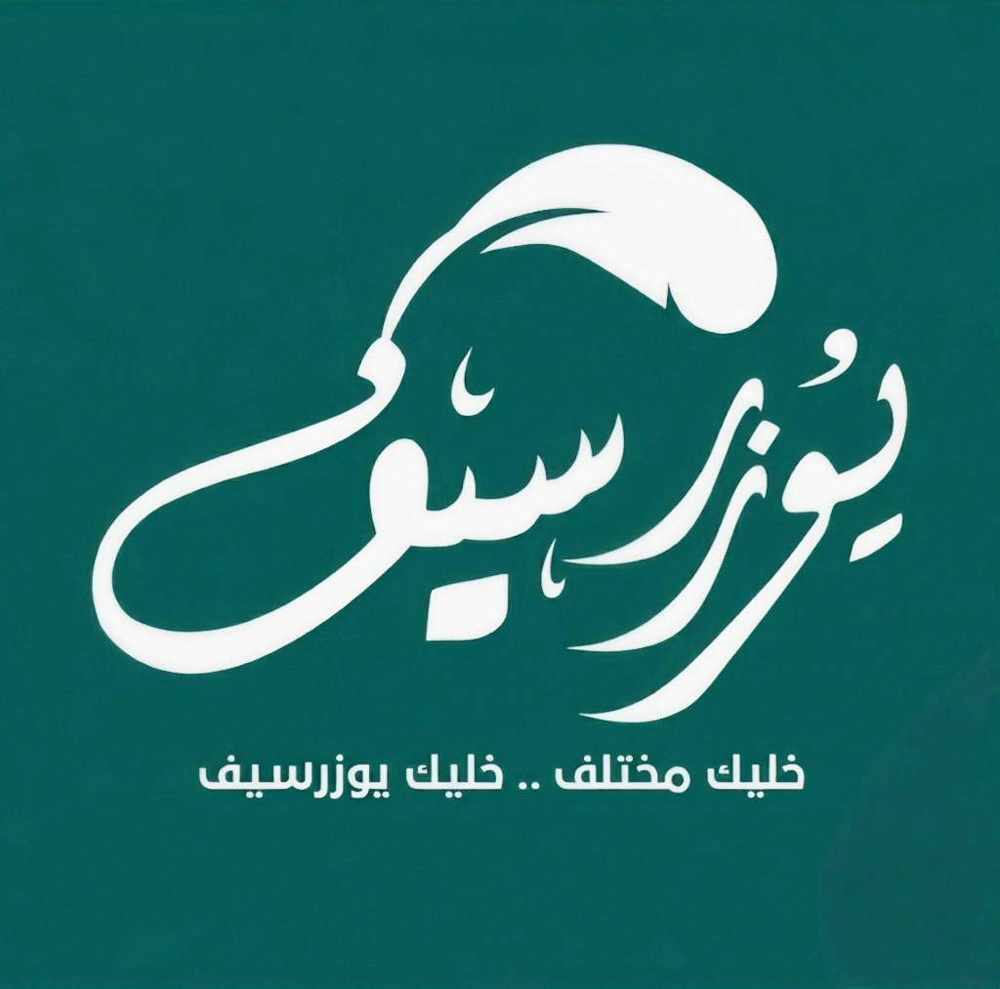
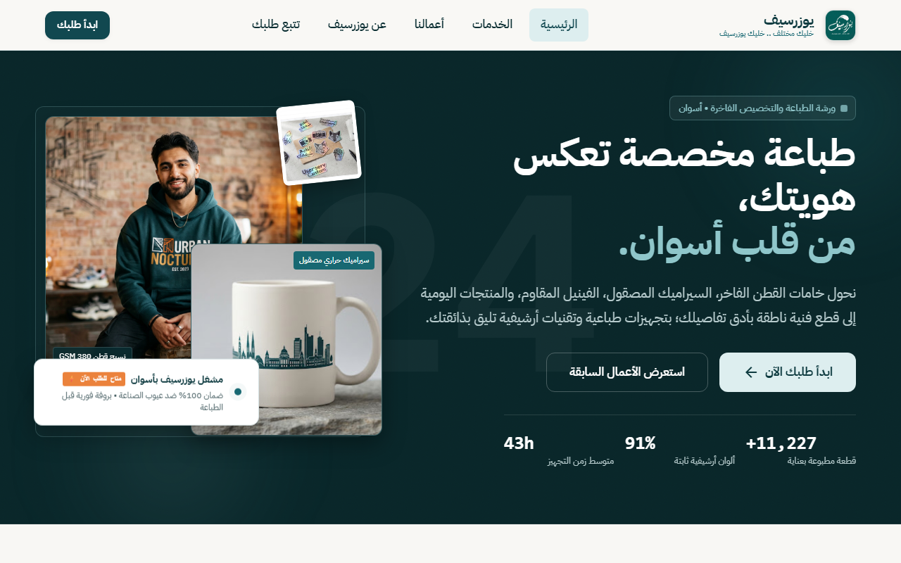
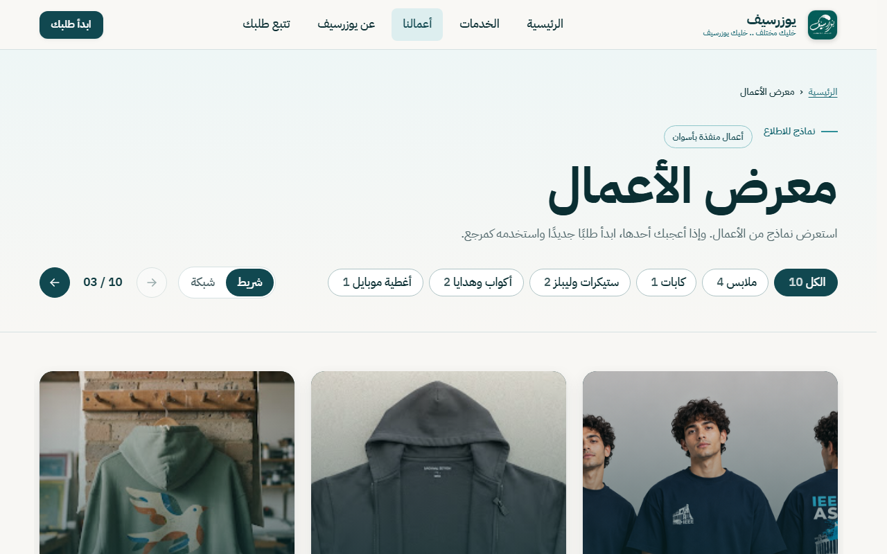
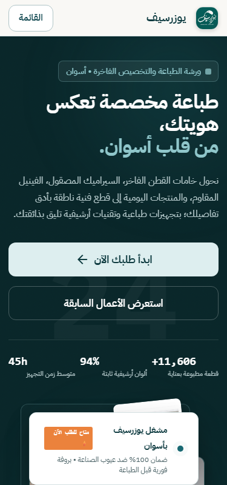
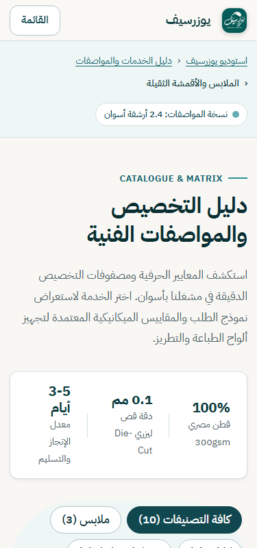
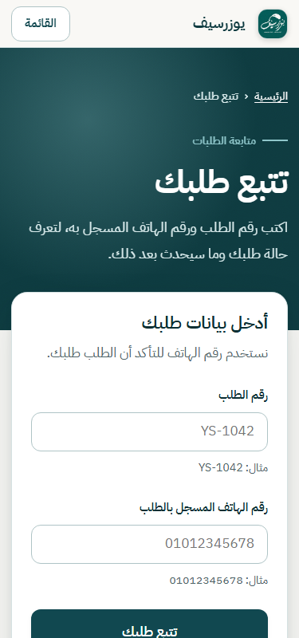

هندسة واجهة وتجربة مستخدم متقدمة، معالج دقيق لمواصفات الإنتاج، وفحص برمجي لجاهزية الطلبات مع تتبع لحظي بنظام الحالات الفنية وقاعدة بيانات Supabase.
يهدف مشروع يوزرسيف إلى تمكين العلامة التجارية المحلية بأسوان من امتلاك منصة رقمية مستقلة وعالية الكفاءة دون الاعتماد على رسائل الدردشة غير المنظمة.
استبدال الوصف النصي العشوائي بمصفوفة مواصفات رقمية (نوع القماش، أوزان GSM، سواتش الألوان، توزيع المقاسات، وتحديد مواضع الطباعة الميكانيكية بدقة).
فحص أبعاد وملفات التصميم لحظياً عبر محرك readiness.js للتأكد من جودة الدقة (DPI) وصلاحية الطباعة قبل التوريد مع ضمان 100% ضد عيوب الصناعة.
توليد معرف طلب فريد (مثل YS-2401) يتيح للعميل تتبع مسار تصنيع طلبه عبر 6 محطات فنية واضحة، مع لوحة قرار وتحكم لصاحب المشروع.
مقارنة تحليلية توضح كيف حلت المنصة الاختناقات التشغيلية الشائعة في إدارة الطلبات والمشاغل الفنية.
خريطة تدفق تجربة المستخدم (UX Flow) المصممة لتسهيل الشراء للعميل وسرعة اتخاذ القرار للمشغل.
تصفح الهيرو الموزاييكي، فحص أركان الجودة، واستعراض سابقة الأعمال المنفذة بأسوان عبر اللايت بوكس التفاعلي.
تحديد المنتج (هودي، تيشيرت، ماج، ستيكرات)، واختيار اللون وخامات القطن، وتوزيع المقاسات بالعداد الذكي.
سحب وإفلات ملفات الشعار أو العمل الفني مع فحص الجاهزية وإمكانية تجميع سلة طلبات متعددة بطلب واحد.
استلام كود الطلب (مثل YS-2401) ومتابعة التحديثات اللحظية وموعد التجهيز المقدر بأسوان.
مراجعة الإدارة للملف الأصلي عالي الجودة، اتخاذ قرار الاعتماد أو طلب التعديل الفني، وإخطار العميل.
مكونات برمجية مخصصة طُوّرت خصيصاً لتلبية متطلبات أعمال الطباعة الشخصية والحرفية.
Wizard Step Engine: تبديل ديناميكي بين الملابس والسيراميك والستيكرات مع سواتش ألوان حية ومحدد مسار القص Die-Cut.
services.htmlInteractive Lightbox: عرض أعمال المشغل بوضعين (كاروسيل سحب ناعم + شبكة كاملة) مع نافذة تفاصيل ومواصفات الخامات.
portfolio.html6-Stage Timeline: تايم لاين رقمي ذكي يتحول من أفقي على الشاشات الكبيرة إلى عمودي مريح على الموبايل برقم الهاتف.
track.htmlAdmin Command Hub: مصادقة آمنة، فلترة بالحالات، فحص دقة التصاميم، واعتماد أو رفض مع كتابة مبررات فنية تفصيلية.
admin.htmlبناء الموقع باستخدام أحدث تقنيات الويب الأصلية لتحقيق سرعة تحميل فائقة وأقصى استقرار وأمان لقاعدة البيانات.
| الطبقة المعمارية | التقنية والأداة الفعلية المستخدمة |
|---|---|
| بنية العرض (Presentation) | Semantic HTML5 • CSS3 Custom Properties (Design Tokens) • BEM |
| المنطق والبرمجة (Logic) | Vanilla ES6+ JavaScript • Async/Await • IntersectionObserver |
| قاعدة البيانات والباك إند | Supabase PostgreSQL • Stored Procedures (RPC) • Real-time DB |
| الأمان والسياسات | Row Level Security (RLS) • Secure Private Buckets • Data Escaping |
| الطباعة والخطوط | Google Font "IBM Plex Sans Arabic" • Tabular Numeric Isolation |
* يُمنع الاستعلام المباشر من الصفحات؛ جميع العمليات تمر عبر دوال api.js لضمان التحقق من الصلاحيات والمدخلات.
مبني وفق شبكة مسافات هندسية 8px ومتغيرات مركزية موثقة في ملف tokens.css و base.css.
clamp() لتغيير حجم العناوين بسلاسة دون قفزات مفاجئة.--s-1 (8px) إلى --s-12 (96px).tabular-nums لضبط محاذاة الجداول والأسعار.من أصغر شاشات الهواتف (320px) وحتى الشاشات المكتبية العملاقة بدقة 4K (2560px)، بنهج Mobile-First خالص.
قائمة درج كاملة الارتفاع، كروت تدفق رأسية، أزرار إجراءات مثبتة أسفل الشاشة (Sticky CTA)، وتحويل الجداول إلى كروت ملخصة.
إعادة ترتيب الأعمدة إلى شبكة ثنائية (2-Column Grid)، الحفاظ على سهولة اللمس بالإبهام، وتحسين حجم الصور والخطوط الموزاييكية.
تخطيط متكامل بعمودين للطلب والمعاينة، تأثيرات تحويم ناعمة (Hover Effects)، ملاحة أفقية وتثبيت شريط الطلب أثناء التمرير.
لقطات شاشة فعلية ملتقطة من الموقع الحي توضح تجانس العناصر والشبكة البصرية.


لقطات حقيقية على مقاسات الشاشة الصعبة (320px - 414px) مع خلو كامل من أي تمرير أفقي أو تشويه نصي.



توثيق الاختبارات الآلية والتحسينات الملموسة التي أُجريت أثناء دورة التطوير.
overflow-x: clip ليصبح الفائض 0px عبر كافة الشاشات الـ 17.
مشروع متكامل يجمع بين الطابع الحرفي الأصيل والهندسة البرمجية الدقيقة لخدمة مجتمع أسوان.
تكامل بوابات الدفع المصرية المعتمدة (InstaPay / Fawry / محافظ المحمول) لتأكيد دفع العربون آلياً فور اعتماد الطلب.
دمج محرك عرض ثلاثي الأبعاد ثلاثي المحاور (WebGL/Three.js) يتيح للعميل استعراض مجسم التيشيرت أو الماج بالطباعة قبل الإرسال.
ربط واتساب بيزنس كلاود عبر Webhooks لإرسال رسائل تحديث الحالة الفورية للعميل دون أي تدخل يدوي.
استوديو يوزرسيف بأسوان — IEEE Aswan Student Branch Brand & Build Challenge